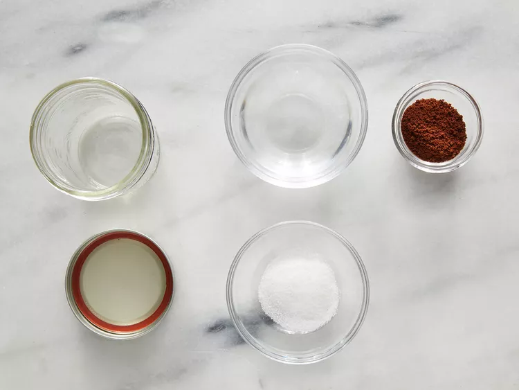
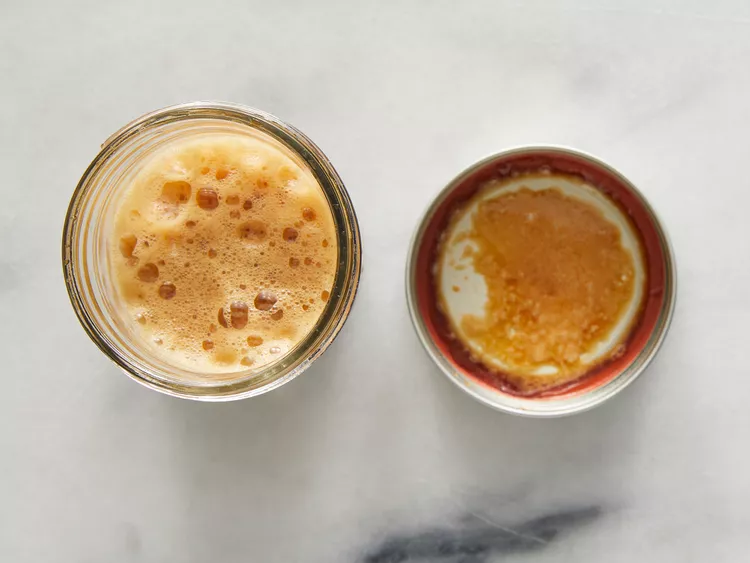
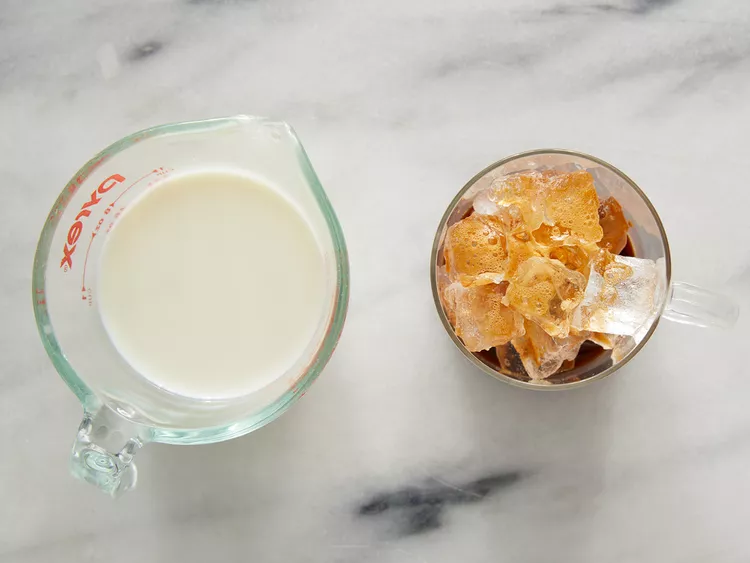

go back
Cold Coffee

Description
It is such an easy and yummy drink to go with a ginger biscuit and a block
of ice
Learn how to make iced coffee with this iced coffee recipe! We use instant
coffee in this cheater-version of iced cappuccino that's very easy to
make, and very nice to drink!
Ingredients:
- 3 tablespoons warm water
- 2 tablespoons instant coffee granules
- 1 tablespoon sugar
- 1 cup ice, or as needed
- 6 fluid ounces cold milk
Steps:
- Gather all ingredients

-
Combine warm water, instant coffee, and sugar in a sealable jar. Seal
and shake until foamy.

-
Pour into a glass full of ice; add milk. Adjust to taste if necessary.

- Enjoy!